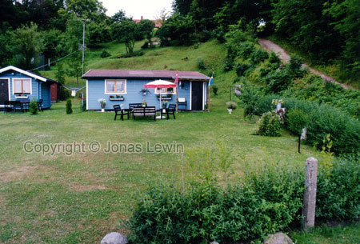

Ven is a very small island, between Sweden and Denmark. So
if you look on a map of northern Europe, you probably will not see it, as it
is most likely too small to be shown.
Summer
houses are very common on Ven. I'm not sure how many people live on Ven when
it's winter, but it must be very few.